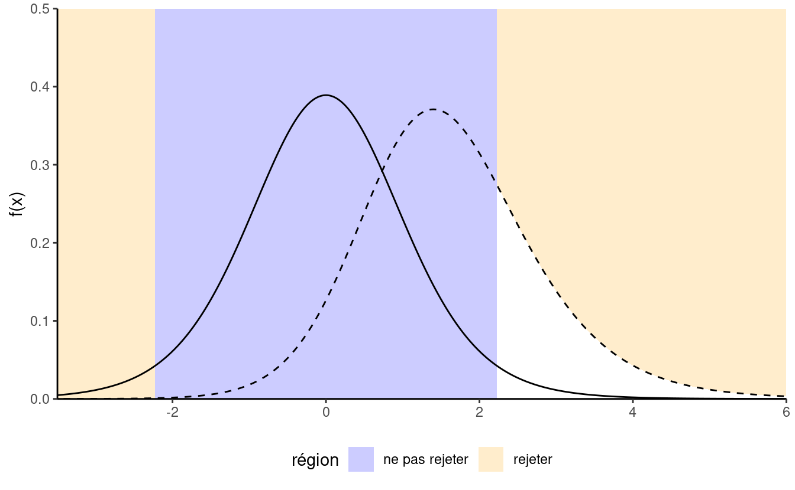
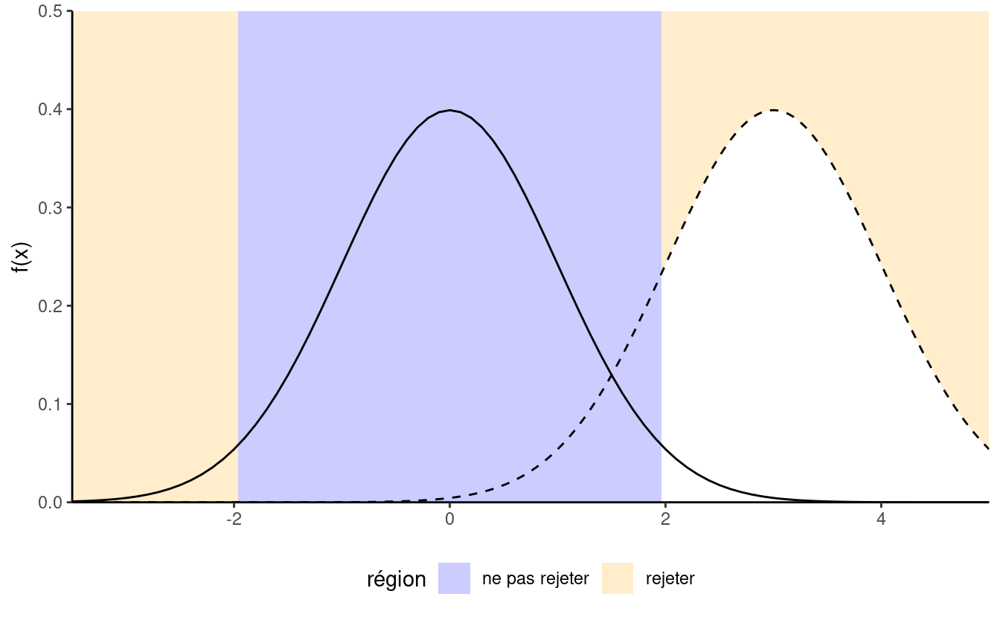
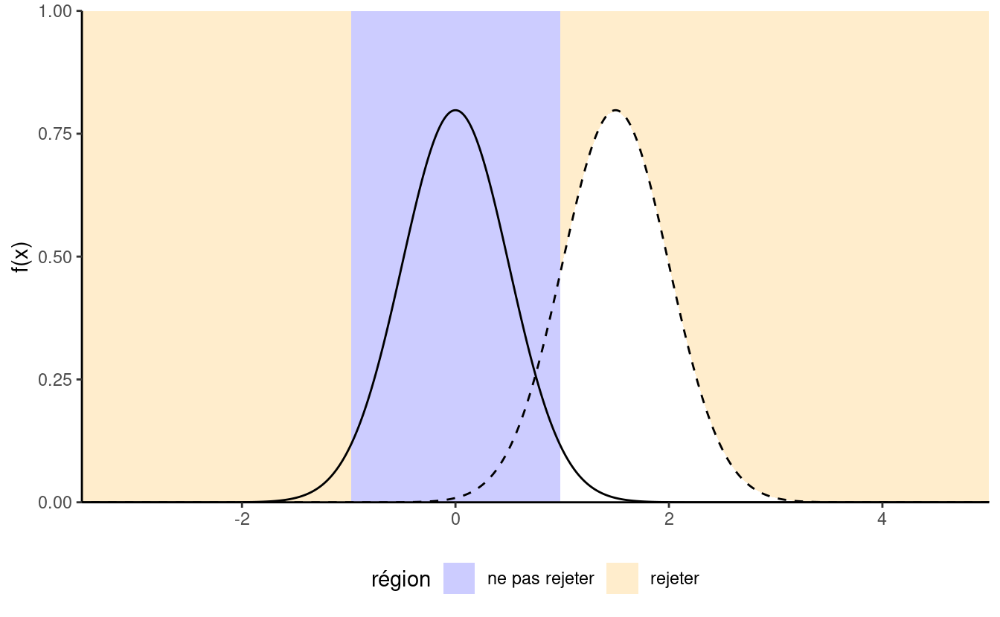

2 Inférence statistique
2.1 Tests d’hypothèse
Un test d’hypothèse statistique est une façon d’évaluer la preuve statistique provenant d’un échantillon afin de faire une décision quant à la population sous-jacente. Les étapes principales sont:
- définir les paramètres du modèle,
- formuler les hypothèses alternative et nulle,
- choisir et calculer la statistique de test,
- déterminer son comportement sous \(\mathscr{H}_0\) (loi nulle),
- calculer la valeur-p,
- conclure dans le contexte du problème (rejeter ou ne pas rejeter \(\mathscr{H}_0\)).
Mon approche privilégiée pour présenter les tests d’hypothèse est de faire un parallèle avec un procès pour meurtre où vous êtes nommé juré.
- Le juge vous demande de choisir entre deux hypothèses mutuellement exclusives, coupable ou non-coupable, sur la base des preuves présentées.
- Votre postulat de départ repose sur la présomption d’innocence: vous condamnerez uniquement le suspect si la preuve est accablante. Cela permet d’éviter les erreurs judiciaires. L’hypothèse nulle \(\mathscr{H}_0\) est donc non-coupable, et l’hypothèse alternative \(\mathscr{H}_a\) est coupable. En cas de doute raisonnable, vous émettrez un verdict de non-culpabilité.
- La choix de la statistique de test représente la preuve. Plus la preuve est accablante, plus grande est la chance d’un verdict de culpabilité — le procureur a donc tout intérêt à bien choisir les faits présentés en cour. Le choix de la statistique devrait donc idéalement maximiser la preuve pour appuyer le postulat de culpabilité le mieux possible (ce choix reflète la puissance du test).
- En qualité de juré, vous analysez la preuve à partir de la jurisprudence et de l’avis d’expert pour vous assurer que les faits ne relèvent pas du hasard. Pour le test d’hypothèse, ce rôle est tenu par la loi sous \(\mathscr{H}_0\): si la personne était innocente, est-ce que les preuves présentées tiendraient la route? des traces d’ADN auront davantage de poids que des ouï-dire (la pièce de théâtre Douze hommes en colère de Reginald Rose présente un bel exemple de procès où un des juré émet un doute raisonnable et convainc un à un les autres membres du jury de prononcer un verdict de non-culpabilité).
- Vous émettez un verdict, à savoir une décision binaire, où l’accusé est déclaré soit non-coupable, soit coupable. Si vous avez une valeur-p, disons \(P\), pour votre statistique de test et que vous effectuez ce dernier à niveau \(\alpha\), la règle de décision revient à rejeter \(\mathscr{H}_0\) si \(P < \alpha\).
On s’attarde davantage sur ces définitions heuristiques et le vocabulaire employé pour parler de tests d’hypothèse. Le matériel de la section suivante a été préparé par Juliana Schulz.
2.2 Hypothèse
Dans les test statistique il y a toujours deux hypothèse: l’hypothèse nulle (\(\mathscr{H}_{0}\)) et l’hypothèse alternative (\(\mathscr{H}_a\)). Habituellement, l’hypothèse nulle est le « statu quo » et l’alternative est l’hypothèse que l’on cherche à démontrer. On se fait l’avocat du Diable en défendant l’hypothèse nulle et en analysant toutes les preuves sous l’angle: « est-ce que les données entrent en contradiction avec \(\mathscr{H}_0\)? ». Un test d’hypothèse statistique nous permet de décider si nos données nous fournissent assez de preuves pour rejeter \(\mathscr{H}_0\) en faveur de \(\mathscr{H}_a\), selon un risque d’erreur spécifié.
Généralement, les tests d’hypothèses sont exprimés en fonction de paramètres (de valeurs inconnues) du modèle sous-jacent, par ex. \(\theta\). Un test d’hypothèse bilatéral concernant un paramètre scalaire \(\theta\) s’exprimerait la forme suivante: \[\begin{align*} \mathscr{H}_0: \theta=\theta_0 \qquad \text{versus} \qquad \mathscr{H}_a:\theta \neq \theta_0. \end{align*}\] Ces hypothèses permettent de tester si \(\theta\) est égal à une valeur numérique précise \(\theta_0\).
Par exemple, pour un test bilatéral concernant le paramètre d’un modèle de régression \(\beta_j\) associé à une variable explicative d’intérêt \(\mathrm{X}_j\), les hypothèses sont \[\begin{align*} \mathscr{H}_0: \beta_j=\beta_j^0 \qquad \text{versus} \qquad \mathscr{H}_a:\beta_j \neq \beta_j^0, \end{align*}\] où \(\beta_j^0\) est une valeur précise qui est reliée à la question de recherche. Par exemple, si \(\beta_j^0=0\) la question de recherche sous-jacente est: est-ce que la covariable \(\mathrm{X}_j\) impacte la variable réponse d’intérêt \(Y\) une fois l’effet des autres variables pris en compte?
Remarque: il est possible d’imposer une direction dans les tests en considérant une hypothèse alternative de la forme \(\mathscr{H}_a: \theta > \theta_0\) ou \(\mathscr{H}_a: \theta < \theta_0\).
2.3 Statistique de test
Une statistique de test \(T\) est un fonctionnel des données qui résume l’information contenue dans les données pour \(\theta\). La forme de la statistique de test est choisie de façon à ce que son comportement sous \(\mathscr{H}_0\), c’est-à-dire l’ensemble des valeurs que prend \(T\) si \(\mathscr{H}_0\) est vraie et leur probabilité relative, soit connu. En effet, \(T\) est une variable aléatoire et sa valeur va changer selon l’échantillon. La loi nulle de la statistique de test nous permet de déterminer quelles valeurs de \(T\) sont plausibles si \(\mathscr{H}_0\) est vraie. Plusieurs statistiques que l’on couvrira dans ce cours sont des statistiques de Wald, de la forme \[\begin{align*} T = \frac{\widehat{\theta} - \theta_0}{\mathrm{se}(\widehat{\theta})} \end{align*}\] où \(\widehat{\theta}\) est l’estimateur du paramètre \(\theta\), \(\theta_0\) la valeur numérique postulée (par ex., zéro) et \(\mathrm{se}(\widehat{\theta})\) est l’estimateur de l’écart-type de \(\widehat{\theta}\).
Par exemple, pour une hypothèse sur la moyenne d’une population de la forme \[\begin{align*} \mathscr{H}_0: \mu=0, \qquad \mathscr{H}_a:\mu \neq 0, \end{align*}\] la statistique de test de Wald est \[\begin{align*} T &= \frac{\overline{X}-0}{S_n/\sqrt{n}} \end{align*}\] où \(\overline{X}\) est la moyenne de l’échantillon \(X_1, \ldots, X_n\), \[\begin{align*} \overline{X} &= \frac{1}{n} \sum_{i=1}^n X_i = \frac{X_1+ \cdots + X_n}{n} \end{align*}\] et l’erreur-type de la moyenne \(\overline{X}\) est \(S_n/\sqrt{n}\); l’écart-type \(S_n\) est un estimateur de \(\sigma\), où \[\begin{align*} S^2_n &= \frac{1}{n-1} \sum_{i=1}^n (X_i-\overline{X})^2. \end{align*}\]
Il convient de faire la différence entre procédures/formules et valeurs numériques. Un estimateur est une règle ou une formule utilisée pour calculer l’estimation d’un paramètre ou quantité d’intérêt selon des données observées. Par exemple, la moyenne d’échantillon \(\overline{X}\) est un estimateur de la moyenne dans la population \(\mu\). Une fois qu’on a des données observées, on peut calculer un estimé de la moyenne empirique \(\overline{x},\) c’est-à-dire, on obtient une valeur numérique. Autrement dit,
- un estimateur est une fonction de variables aléatoires et donc c’est aussi une variable aléatoire car sa valeur fluctue d’un échantillon à l’autre.
- l’estimé est la valeur numérique calculée sur un échantillon donné.
2.4 Loi nulle et valeur-p
La valeur-p nous permet de déterminer si la valeur observée de la statistique de test \(T\) est plausible sous \(\mathscr{H}_0\). Plus précisément, la valeur-p est la probabilité, si \(\mathscr{H}_0\) est vraie, que la statistique de test soit égale or plus extrême à ce qu’on observe. Supposons qu’on a un échantillon \(X_1, \ldots, X_n\) et qu’on observe une valeur de la statistique de test de \(T=t\). Pour un test d’hypothèse bilatéral \(\mathscr{H}_0:\theta=\theta_0\) vs. \(\mathscr{H}_a:\theta \neq \theta_0\), la valeur-p est \(\mathsf{Pr}_0(|T| \geq |t|)\). Si la distribution de \(T\) est symétrique autour de zéro, la valeur-p vaut \[\begin{align*} p = 2 \times \mathsf{Pr}_0(T \geq |t|). \end{align*}\]
Prenons l’exemple d’un test d’hypothèse bilatéral pour la moyenne au population \(\mathscr{H}_0:\mu=0\) contre \(\mathscr{H}_a:\mu \neq 0\). Si l’échantillon provient d’une (population de) loi normale \(\mathsf{Norm}(\mu, \sigma^2)\), on peut démontrer que, si \(\mathscr{H}_0\) est vraie et donc \(\mu=0\)), la statistique de test \[\begin{align*} T = \frac{\overline{X}}{S/\sqrt{n}} \end{align*}\] suit une loi de Student-\(t\) avec \(n-1\) degrés de liberté, dénotée \(\mathsf{St}_{n-1}\). À partir de cette loi nulle, on peut calculer la valeur-p (ou bien à partir d’une table ou d’un logiciel statistique). Puisque la distribution Student-\(t\) est symétrique autour de \(0\), on peut calculer la valeur-p comme \(P = 2\times\mathsf{Pr}(T > |t|)\), où \(T \sim \mathsf{St}_{n-1}\).
2.5 Conclusion
La valeur-p nous permet de faire une décision quant aux hypothèses du test. Si \(\mathscr{H}_0\) est vraie, la valeur-p suit une loi uniforme. Si la valeur-p est petite, ça veut dire que le fait d’observer une statistique de test égal ou encore plus extrême que \(T=t\) est peu probable, et donc nous aurons tendance de croire que \(\mathscr{H}_0\) n’est pas vraie. Il y a pourtant toujours un risque sous-jacent de commettre un erreur quand on prend une décision. En statistique, il y a deux types d’erreurs:
- erreur de type I: on rejette \(\mathscr{H}_0\) alors que \(\mathscr{H}_0\) est vraie
- erreur de type II: on ne rejette pas \(\mathscr{H}_0\) alors que \(\mathscr{H}_0\) est fausse
Ces deux erreurs ne sont pas égales: on cherche souvent à contrôler l’erreur de type I (une erreur judiciaire, condamner un innocent). Pour se prémunir face à ce risque, on fixe préalablement un niveau de tolérance. Plus notre seuil de tolérance \(\alpha\) est grand, plus on rejette souvent l’hypothèse nulle même si cette dernière est vraie. La valeur de \(\alpha \in (0, 1)\) est la probabilité qu’on rejette \(\mathscr{H}_0\) quand \(\mathscr{H}_0\) est en fait vraie. \[\begin{align*} \alpha = \mathsf{Pr}_0\left(\text{ rejeter } \mathscr{H}_0\right). \end{align*}\] Comme chercheur, on choisit ce niveau \(\alpha\); habituellement \(1\)%, \(5\)% ou \(10\)%. La probabilité de commettre une erreur de type I est \(\alpha\) seulement si le modèle nul postulé pour \(\mathscr{H}_0\) est correctement spécifié (sic) et correspond au modèle générateur des données.
Le choix du statu quo (typiquement \(\mathscr{H}_0\)) s’explique plus facilement avec un exemple médical. Si vous voulez prouver qu’un nouveau traitement est meilleur que l’actuel (ou l’absence de traitement), vous devez démontrer hors de tout doute raisonnable que ce dernier ne cause pas de torts aux patients et offre une nette amélioration (pensez à Didier Raoult et ses allégations non-étayées voulant que l’hydrochloroquine, un antipaludique, soit efficace face au virus de la Covid19).
| Décision \ vrai modèle | \(\mathscr{H}_0\) | \(\mathscr{H}_a\) |
|---|---|---|
| ne pas rejeter \(\mathscr{H}_0\) | \(\checkmark\) | erreur de type II |
| rejeter \(\mathscr{H}_0\) | erreur de type I | \(\checkmark\) |
Pour prendre une décision, on doit comparer la valeur-p \(P\) avec le niveau du test \(\alpha\):
- si \(P < \alpha\) on rejette \(\mathscr{H}_0\),
- si \(P \geq \alpha\) on ne rejette pas \(\mathscr{H}_0\).
Attention à ne pas confondre niveau du test (probabilité fixée au préalable par l’expérimentateur) et la valeur-p (qui dépend de l’échantillon). Si vous faites un test à un niveau 5% la probabilité de faire une erreur de type I est de 5% par définition, quelque soit la valeur de la valeur-p. La valeur-p s’interprète comme la probabilité d’obtenir une valeur de la statistique de test égale ou même plus grande que celle qu’on a observée dans l’échantillon, si \(\mathscr{H}_0\) est vraie.
2.6 Puissance statistique
Le but du test d’hypothèse est de prouver (hors de tout doute raisonnable) qu’une différence ou un effet est significatif:: par exemple, si une nouvelle configuration d’un site web (hypothèse alternative) permet d’augmenter les ventes par rapport au statu quo. Notre capacité à détecter cette amélioration dépend de la puissance du test: plus cette dernière est élevée, plus grande est notre capacité à rejeter \(\mathscr{H}_0\) quand ce dernier est faux. Quand on ne rejette pas \(\mathscr{H}_0\) et que \(\mathscr{H}_a\) est en fait vraie, on commet une erreur de type II: cette dernière survient avec probabilité \(1-\gamma\). La puissance statistique d’un test est la probabilité que le test rejette \(\mathscr{H}_0\) alors que \(\mathscr{H}_0\) est fausse, soit \[\begin{align*} \gamma = \mathsf{Pr}_a(\text{rejeter } \mathscr{H}_0) \end{align*}\] Selon le choix de l’alternative, il est plus ou moins facile de rejeter l’hypothèse nulle en faveur de l’alternative.


On veut qu’un test ait une puissance élevée, c’est-à-dire, on veut que \(\gamma\) soit le plus près de 1 possible. Minimalement, la puissance du test devrait être \(\alpha\) si on rejette l’hypothèse nulle une fraction \(\alpha\) du temps quand cette dernière est vraie. La puissance dépend de plusieurs critères, à savoir:
- la taille de l’effet: plus la différence est grande entre la valeur du paramètre postulé \(\theta_0\) sous \(\mathscr{H}_0\) et le comportement observé, plus il est facile de le détecter (voir Figure 2.3);
- la variabilité: moins les observations sont variables, plus il est facile de déterminer que la différence observée est significative (les grandes différences sont alors moins plausibles, comme l’illustre la Figure 2.2);
- la taille de l’échantillon: plus on a d’observations, plus notre capacité à détecter une différence significative augmente parce que l’erreur-type décroît avec la taille de l’échantillon à un rythme (ordinairement) de \(n^{-1/2}\). La loi nulle devient aussi plus concentrée quand la taille de l’échantillon augmente.
- le choix de la statistique de test: par exemple, les statistiques basées sur les rangs n’utilisent pas les valeurs numériques qu’à travers le rang relatif. Ces tests sont donc moins puissants parce qu’ils n’utilisent pas toute l’information dans l’échantillon; en contrepartie, ils sont souvent plus robustes en présence de valeurs aberrantes et si le modèle est mal spécifié. Les statistiques de test que nous choisirons sont souvent standards et parmi les plus puissantes qui soient, aussi on ne traitera pas de ce point davantage dans le cadre du cours.
Pour calculer la puissance d’un test, il faut choisir une alternative spécifique. Pour des exemples simples de statistiques, on peut obtenir une formule pour la puissance: par exemple, si on utilise un test-\(t\) pour un échantillon, la statistique \(T=\sqrt{n}(\overline{X}-\mu_0)/S_n \sim \mathcal{T}_{n-1}\) et, si la vraie moyenne est \(\Delta + \mu_0\), alors la loi alternative est Student-\(t\), mais non-centrée avec paramètre de décalage \(\Delta\). Cette dérivation est l’exception plutôt que la règle et on détermine d’ordinaire la puissance à l’aide de méthodes de Monte Carlo en simulant des observations d’une alternative donnée, en calculant la statistique de test sur le nouvel échantillon simulé et en calculant la valeur-p associée à notre hypothèse nulle de façon répétée. On calcule par la suite la proportion de tests qui mènent au rejet de l’hypothèse nulle à niveau \(\alpha\), ce qui correspond au pourcentage de valeurs-\(p\) inférieures à \(\alpha\).
2.7 Intervalle de confiance
Un intervalle de confiance est une manière alternative de rapporter les conclusions d’un test, en ce sens qu’on fournit une estimation ponctuelle de \(\hat{\theta}\) avec une marge d’erreur. L’intervalle de confiance donne donc une indication de la variabilité de la procédure d’estimation. Un intervalle de confiance de Wald à \((1-\alpha)\) pour un paramètre \(\theta\) est de la forme \[\begin{align*} \widehat{\theta} \pm \mathfrak{q}_{\alpha/2} \; \mathrm{se}(\widehat{\theta}) \end{align*}\] où \(\mathfrak{q}_{\alpha/2}\) est le quantile d’ordre \(1-\alpha/2\) de la loi nulle de la statistique de Wald, \[\begin{align*} T =\frac{\widehat{\theta}-\theta}{\mathrm{se}(\widehat{\theta})}, \end{align*}\] et où \(\theta\) représente la valeur du paramètre \(\theta\) (supposé fixe, mais inconnu) de la population. Les bornes de l’intervalle de confiance sont aléatoires puisque \(\widehat{\theta}\) et \(\mathrm{se}(\widehat{\theta})\) sont des variable aléatoires: leurs valeurs observées changent d’un échantillon à un autre.
Par exemple, pour un échantillon aléatoire \(X_1, \ldots, X_n\) provenant d’une loi normale \(\mathsf{Norm}(\mu, \sigma)\), l’intervalle de confiance à \((1-\alpha)\) pour la moyenne (dans la population) \(\mu\) est \[\begin{align*} \overline{X} \pm t_{n-1, \alpha/2} \frac{S}{\sqrt{n}} \end{align*}\] où \(t_{n-1, \alpha/2}\) est le quantile d’ordre \(1-\alpha/2\) de la loi Student-\(t\) avec \(n-1\) degrés de libertés.
Avant qu’on calcule l’intervalle de confiance, il y a une probabilité de \(1-\alpha\) que \(\theta\) soit contenu dans l’intervalle aléatoire symmétrique \((\widehat{\theta} - \mathfrak{q}_{\alpha/2} \; \mathrm{se}(\widehat{\theta}), \widehat{\theta} + \mathfrak{q}_{\alpha/2} \; \mathrm{se}(\widehat{\theta}))\), où \(\widehat{\theta}\) dénote l’estimateur de \(\theta\). Une fois qu’on obtient un échantillon et qu’on calcule les bornes de l’intervalle de confiance, il n’y a plus de notion de probabilité: la vraie valeur du paramètre \(\theta\) (inconnue) est soit contenue dans l’intervalle de confiance, soit pas. La seule interprétation de l’intervalle de confiance qui soit valable alors est la suivante: si on répète l’expérience plusieurs fois et qu’à chaque fois on calcule un intervalle de confiance à \(1-\alpha\), alors une proportion de \((1-\alpha)\) de ces intervalles devraient contenir la vraie valeur de \(\theta\) (de la même manière, si vous lancez une pièce de monnaie équilibrée, vous devriez obtenir grosso modo une fréquence de 50% de pile et 50% de face, mais chaque lancer donnera un ou l’autre de ces choix). Notre « confiance » est dans la procédure et non pas dans les valeurs numériques obtenues pour un échantillon donné.

Si on s’intéresse seulement à la décision rejeter/ne pas rejeter \(\mathscr{H}_0\), l’intervalle de confiance est équivalent à la valeur-p en ce sens qu’il mène à la même décision. L’intervalle de confiance donne en revanche l’ensemble des valeurs pour lesquelles la statistique de test ne fournit pas assez de preuves pour rejeter \(\mathscr{H}_0\): pour un test à niveau \(\alpha\), on ne rejetterait aucune des valeurs contenues dans l’intervalle de confiance de niveau \(1-\alpha\). Si la valeur-p est inférieure à \(\alpha\), la valeur postulée pour \(\theta\) est donc hors de l’intervalle de confiance calculé. À l’inverse, la valeur-p ne donne la probabilité d’obtenir un résultat aussi extrême sous l’hypothèse nulle que pour une seule valeur numérique, mais permet de quantifier précisément à quel point le résultat est extrême.
Exemple 2.1 (Achat en ligne de milléniaux) Supposons qu’une chercheuse veut faire une étude sur l’évolution des ventes en ligne au Canada. Elle postule que les membres de la génération Y fait plus d’achats en ligne que ceux des générations antérieures. Pour répondre à cette question, un sondage est envoyé à un échantillon aléatoire de \(n=500\) individus représentatif de la population avec 160 membres de la génération Y et 340 personnes plus âgées. La variable réponse est le montant d’achat effectués en ligne dans le mois dernier (en dollars).
Dans cet exemple, on s’intéresse à la différence entre le montant moyen des Y et celui des générations antérieures: la différence de moyenne observée dans l’échantillon est de 16.49 dollars et donc les milléniaux ont dépensé davantage. En revanche, notre échantillon est aléatoire et le montant d’achat en ligne varie d’un individu à l’autre (et d’un mois à l’autre): ce n’est donc pas suffisant pour dire que la différence est significative.
La première étape de notre analyse consiste à définir les quantités d’intérêt et à formuler nos hypothèse en fonction de paramètres du modèle; il convient également de définir ces derniers en fonction des variables en présence dans l’exemple. Ici, on considère un test pour la différence de moyenne dans les populations postulées \(\mu_1\) (pour la génération Y) et \(\mu_2\) (pour les générations antérieures) d’écart-type respectif \(\sigma_1\) et \(\sigma_2\). Comment déterminer quelle hypothèse on considère? Comme statisticien, on se fait l’avocat du Diable: l’hypothèse d’intérêt du chercheur est l’hypothèse alternative et ici, \(\mathscr{H}_a: \mu_1 > \mu_2\), où \(\mu_1\) représente la moyenne des achats mensuels des milléniaux. L’hypothèse nulle comprend toutes les autres valeurs pour la différence de moyenne, soit \(\mathscr{H}_0: \mu_1 \leq \mu_2\). Il suffit néanmoins de considérer le cas \(\mu_1=\mu_2\) (pourquoi?)
La deuxième étape consiste à choisir une statistique de test. S’il n’y a aucune différence de moyenne entre les groupes, alors \(\overline{X}_1-\overline{X}_2\) a moyenne zéro et la différence de moyenne a une variance de \(\sigma^2_1/n_1+\sigma^2_2/n_2\). Ici, on considère la statistique de Welch (1947) pour une différence de moyenne entre deux échantillons: \[\begin{align*} T = \frac{\overline{X}_1 - \overline{X}_2}{\left(\frac{S_1^2}{n_1}+\frac{S_2^2}{n_2} \right)^{1/2}}, \end{align*}\] où \(\overline{X}_i\) est la moyenne empirique dans l’échantillon \(i\) (\(i=1, 2\)) et \(S_i^2\) est la variance empirique et \(n_i\) la taille de l’échantillon du groupe \(i\). La statistique est utilisée pour calculer la différence de moyennes de deux échantillons de variance potentiellement différente. La valeur de la statistique dans l’échantillon est \(T=2.76\), mais on obtiendrait une valeur différente avec un autre échantillon. Il convient donc de déterminer si cette valeur est compatible avec notre hypothèse nulle en la comparant à la loi nulle sous \(\mathscr{H}_0\) de \(T\). On effectuera le test à niveau \(\alpha=0.05\).
La troisième étape est l’obtention d’un étalon de mesure pour déterminer si notre résultat est extrême ou inattendu. Vous remarquerez que la statistique de Welch a moyenne zéro et variance un sous l’hypothèse nulle que \(\mu_1=\mu_2\): standardiser une statistique permet d’obtenir un objet dont on connaît le comportement pour de grands échantillons et obtenir une quantité sans unité de mesure. La dérivation de la loi nulle est hors objectifs du cours, aussi cette dernière vous sera donnée dans tous les cas qu’on considère. Asymptotiquement, \(T\) suit une loi normale \(\mathsf{Norm}(0, 1)\), mais il existe une meilleure approximation pour \(n\) petit; on compare le comportement de \(T\) à l’aide d’une loi de Student via l’approximation de Satterthwaite (1946).
La dernière étape consiste à obtenir une valeur-p, soit la probabilité d’observer un résultat aussi extrême sous \(\mathscr{H}_0\): l’avantage de la valeur-p est que cette valeur est une probabilité (dans \([0, 1]\)) et qu’elle suit une loi uniforme sous \(\mathscr{H}_0\). Puisque nous avons une hypothèse alternative unilatérale, on regarde la probabilité sous \(\mathscr{H}_0\) que \(\mathsf{Pr}(T > t)\). La valeur-p vaut \(0.0031\) et donc, à niveau 5%, on rejette l’hypothèse nulle pour conclure que la génération Y dépense davantage en ligne que les générations antérieures.
Exemple 2.2 (Prix de billets de trains à grande vitesse espagnols) La compagnie nationale de chemin de fer Renfe gère les trains régionaux et les trains à haute vitesse dans toute l’Espagne. Les prix des billets vendus par Renfe sont aggrégés par une compagnie. On s’intéresse ici à une seule ligne, Madrid–Barcelone. Notre question scientifique est la suivante: est-ce que le prix des billets pour un aller (une direction) est plus chère pour un retour? Pour ce faire, on considère un échantillon de 10000 billets entre les deux plus grandes villes espagnoles. On s’intéresse au billets de TGV vendus (AVE) au tarif Promotionnel. Notre statistique de test sera simplement la différence de moyenne entre les deux échantillons: la différence entre le prix en euros d’un train Madrid–Barcelone (\(\mu_1\)) et le prix d’un billet Barcelone–Madrid (\(\mu_2\)) est \(\mu_1-\mu_2\) et notre hypothèse nulle est qu’il n’y a aucune différence de prix, soit \(\mathscr{H}_0: \mu_1-\mu_2=0\).
On utilise de nouveau le test de Welch pour deux échantillons en filtrant les données pour ne conserver que les billets au tarif Promo: la moyenne des billets Barcelone-Madrid est 82.11 euros, ceux pour Madrid-Barcelone 82.56 euros et la valeur de la statistique de Welch est -1.33. Si on utilise l’approximation normale, on obtient une valeur-p de 0.18.
Plutôt que d’utiliser la loi asymptotique (qui est valide pour de grands échantillons à cause du théorème central limite), on peut considérer une approximation sous une hypothèse moins restrictive en supposant que les données sont échangeables. Sous l’hypothèse nulle, il n’y aucune différence entre les deux destinations et les étiquettes pour la destination (une variable catégorielle binaire) sont arbitraires. On pourrait considérer les mêmes données, mais avec une permutation des variables explicatives: c’est ce qu’on appelle un test de permutation. On va recréer deux groupes de taille identique à notre échantillon original, mais en changeant les observations. On recalcule la statistique de test sur ces nouvelle données (si on a une poignée d’observations, il est possible de lister toutes les permutations possibles; typiquement, il suffit de considérer un grand nombre de telles permutations, disons 9999). Pour chaque nouveau jeu de données, on calculera la statistique de test et on calculera le rang de notre statistique par rapport à cette référence. Si la valeur de notre statistique observée sur l’échantillon original est extrême en comparaison, c’est autant de preuves contre l’hypothèse nulle.

La valeur-p du test de permutation, \(0.186\), est la proportion de statistiques plus extrêmes que celle observée. Cette valeur-p est quasi-identique à celle de l’approximation de Satterthwaite, à savoir \(0.182\) (la loi Student-\(t\) est numériquement équivalente à une loi standard normale avec autant de degrés de liberté), tel que représenté dans la Figure 2.5. Malgré que notre échantillon soit très grand, avec \(n=8059\) observations, la différence n’est pas jugée significative. Avec un échantillon de deux millions de billets, on pourrait estimer précisément la moyenne (au centime près): la différence de prix entre les deux destinations et cette dernière deviendrait statistiquement significative. Elle n’est pas en revanche pas pertinente en partique, car une différence de \(0.28\) euros sur un prix moyen de \(82.56\) euros est quantité négligeable.